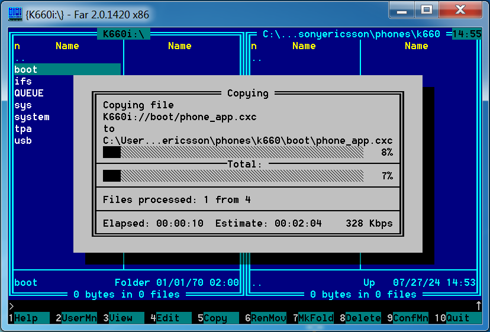
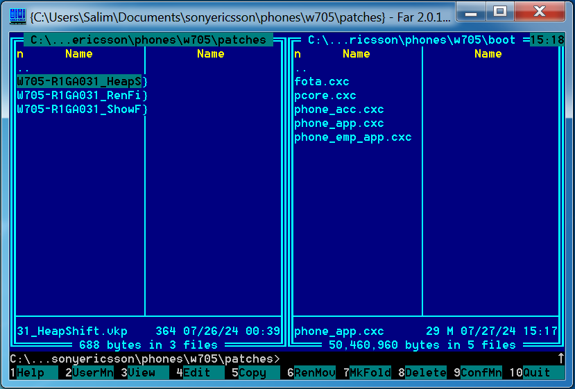
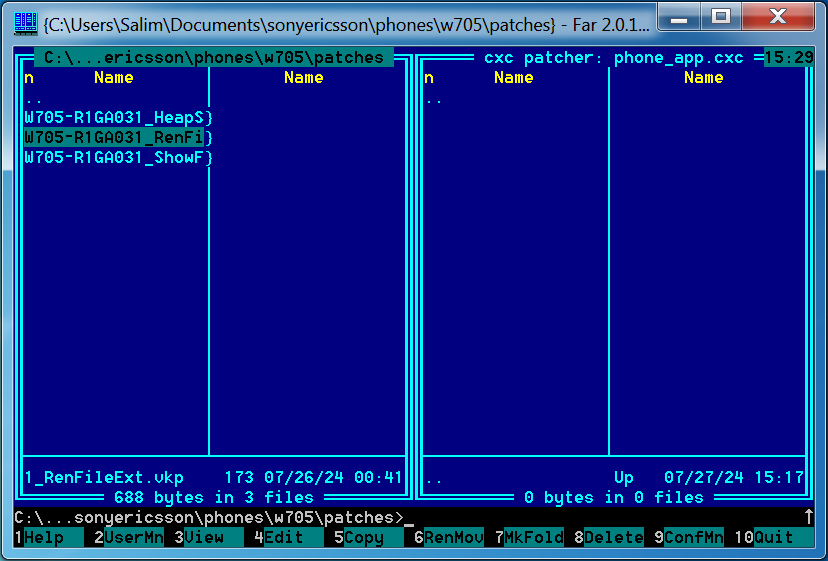

CID <= 53#
⚠️WARNING⚠️: You must first have a phone with BROWN certificates, otherwise you won’t be able to mod your A2-based phone. You can do this with a tool such as Omnius for SE (Feel free to join the Discord to ask for an Omnius account).
On A2-based phones, patching is done differently compared to A1 phones. It requires to extract the firmware’s executables, also known as .cxc files (this is why BROWN certificates are needed) and patching them accordingly using FARcxcpatcher before copying them back on the phone.
First, open FAR Manager, open the plugin dialog by pressing F11 and select the SEFP2 plugin, once done, press “Connect”

Once done, remove the battery, insert it back in after 5 seconds and plug the USB cable while holding C.
Wait a few seconds and this screen should appear, it lists all elements of the phone’s internal filesystem.

Now on the opposite pane, select a folder where you wanna copy the boot folder to, and press F5 on the SEFP2 pane to copy all of the boot folder to your computer

Once copied, leave SEFP2, unplug the phone for now and open the folder where your patches are located. 
Now, select the file to patch (it should be written inside the VKP patch as such):
;pAtChFiLe=/boot/phone_app.cxc
It should be opened in FARcxcpatcher 
Now select a patch in the opposite pane, and copy it by pressing F5, the patch should now appear inside the .cxc file

Leave CXCPatcher (using the three dots at the top) to apply patches to the executable.
Open SEFP2, plug the phone in recovery mode, copy the patched files to the boot/ folder and reboot the phone, it should be patched.